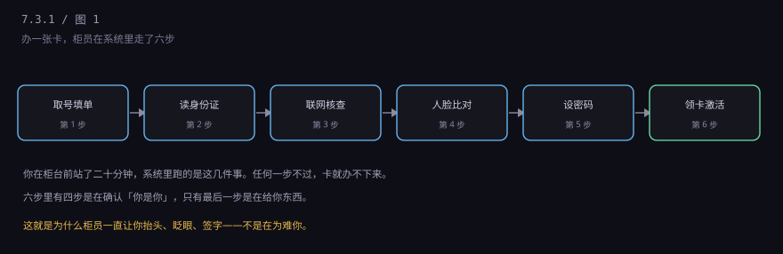
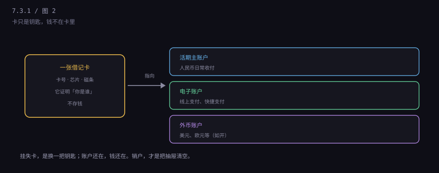
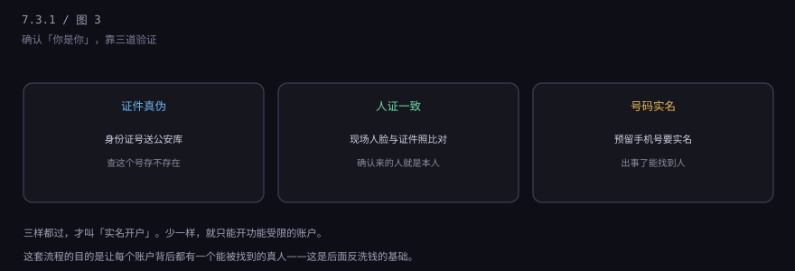

约 0.2 万字 · 3 张图 · 柜员问的每一句，背后都有规矩
先说结论：她在判断你开这张卡的风险等级。
2020 年以后，中国搞了一轮"断卡行动"。背景是电信诈骗： 骗子要收钱，就得有银行卡。他们不会自己去开——容易被抓， 于是花钱买别人的卡，或者骗人办卡。一张卡卖几百块， 对一些人来说很划算。
结果就是：如果你的卡被用来收诈骗款，你要承担责任。 轻则五年内不能开新户、不能用手机银行，重则涉嫌"帮信罪"。 银行也一样，它开的账户涉案，网点和客户经理都要被追责。
所以柜员问用途，不是好奇，是在做尽职调查。 你说"工资卡"，她会看你的工作单位；你说"日常用"，她会问你为什么不在原来的银行办。 答得含糊，她可能就不给你开一类户，只给开个二类户（限额的）。
你看到的是一堆纸和几次抬头，系统里跑的是这六件事。

取号填单：现在多数是平板或柜面系统录入，不用手写。 读身份证：读卡器读芯片，不是抄号码。 联网核查：身份证号送到公安的数据库比对，返回"一致/不一致/无此号码"。 人脸比对：现场拍的和证件照比对，防冒用。 设密码：一般两个，一个取款密码，一个查询/网银密码。 领卡激活：卡当场给你，但要走激活才能用。
每一步都可能失败。身份证消磁、照片和本人差太多、手机号不是本人实名， 都会卡住。这就是为什么有人办卡被拒——不是柜员刁难，是系统过不去。
这是很多人搞混的一点：卡和账户不是一回事。

卡只是一把钥匙：它上面有卡号、芯片、磁条，用来在 ATM 和 POS 上证明"我是这个账户的主人"。 真正的钱在账户里，账户在银行的系统里，是一行记录。
开一张卡，实际会开出一到三个账户：活期主账户（人民币日常收付）、 电子账户（绑定支付宝、微信、快捷支付用的）、 外币账户（如果你要存美元，需要单独开）。
所以"我销卡了"和"我销户了"是两件事。销卡只是把钥匙作废， 账户可能还在；销户才是把抽屉清空、账户关闭。有些银行销卡后账户会自动保留一段时间， 这段时间里还是可能产生年费或者小额账户管理费。
整个流程里，有四步都在干同一件事：确认来办卡的人，就是身份证上的那个人。

证件真伪：芯片读出来的信息送到公安库比对。这一关挡的是假身份证和伪造证件。
人证一致：现场人脸和证件照比对。这一关挡的是"拿别人的身份证来办卡"。 早些年有人专门收身份证去办卡卖钱，现在这关基本堵死了。
号码实名：预留手机号必须是本人实名登记的。这一关挡的是"人办了卡就消失"—— 出了事，公安至少能通过手机号找到人。
三样都过，才算完成实名开户。这也是为什么有些老人、有些外地来的人开卡特别费劲： 不是歧视，是这三样里有一样对不上。
很多人开完卡发现：手机银行一天只能转 5000，柜台取现也要预约。 这不是卡坏了，是新账户有观察期。
银行的风控逻辑是：新开的账户没有交易历史，无法判断风险， 所以先给一个较低的限额；用一段时间、有正常流水之后，限额会自动提高， 或者你带材料去柜台提额。
这套设计和 7.3.2 要讲的一二三类户不是一回事。分类户是监管定的框架， 新卡限额是银行自己的风控，两套规则叠加在一起，所以你才会觉得"限制特别多"。
说到底，开户流程在防三件事。
一是假身份。没有这套验证，任何人都能拿别人的名义开户， 洗钱、诈骗、逃税都会变得容易。
二是卡被买卖。一张实名卡是有价值的黑产商品。 开户门槛提高，卡的供给就少了，价格就高了，诈骗成本也高了。
三是事后追责。"谁开的户，谁负责"——这套规则让银行有动力把好关， 而不是随便发卡冲业绩。
下一节讲一个更具体的问题：为什么你的卡有"一类、二类、三类"之分， 为什么二类卡一天只能转一万。那是另一套完全不同的规则。